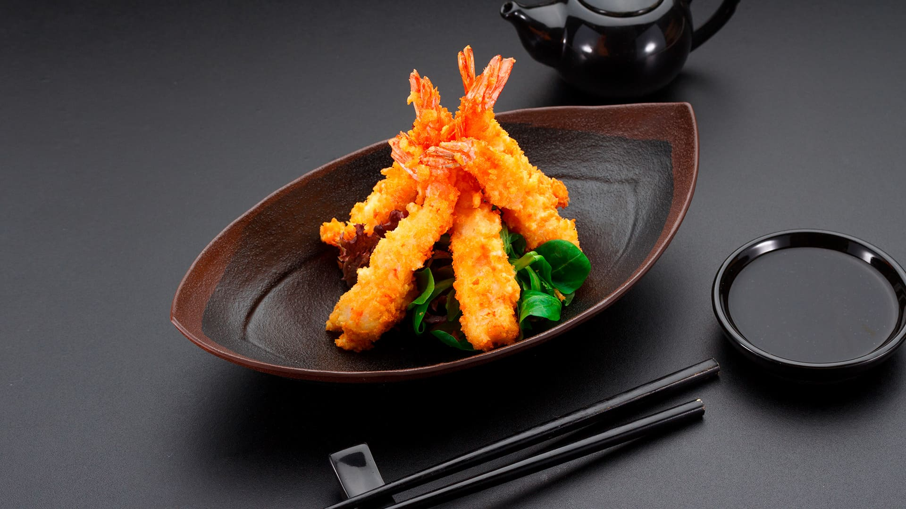

旅する日本
Información
Japón (日本) es un país insular del este de Asia. Está ubicado entre el océano Pacífico y el mar del Japón, al este de China, Rusia y la península de Corea. Conocido como «La tierra del sol naciente», es una de las mayores potencias económicas del mundo. Japón está formado por cuatro islas principales: Honshū, Hokkaidō, Kyūshū y Shikoku, que forman el 97% de la superficie total del país, y por otras 6.848 islas menores adyacentes. Tiene una población de 127 millones de personas, la décima más numerosa del mundo. El área metropolitana de Tokio, que incluye a la ciudad capital de Tokio y las prefecturas de sus alrededores, es el área urbana más grande del mundo en términos de población, albergando a más de 30 millones de habitantes.
Destinos TOP
En Japón hay muchos destinos turísticos que puedes visitar, entre ellos los más populares son:
TOKYO
KYOTO
OSAKA
NARA
HAKKONE
MONTE FUJI
Gastronomía
La gastronomía japonesa es muy variada y deliciosa, entre los platos más conocidos están:
SUSHI

RAMEN
TEMPURA
OKONOMIYAKI

YAKITORI

ONIGIRI

Contacto
Si te gusta la cultura asiática, la gastronomía y la tecnología, Japón es un destino que debes visitar. ¡No te arrepentirás!